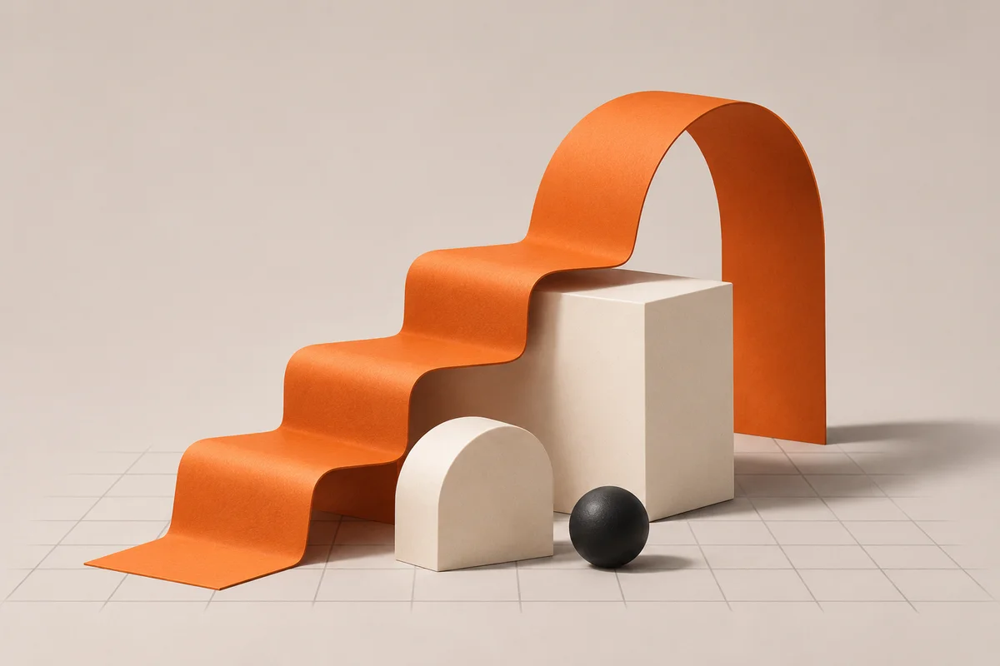

Manual de Projetos / Início
Começa o teu primeiro projeto.
Aprende a preparar as ferramentas, usar IA, construir e publicar. Segue o manual e pratica com exemplos simples.
Começar o percurso
O teu percurso
O que já concluíste
As tarefas que marcas são guardadas neste navegador.
O teu progresso0 tarefas
O progresso fica guardado neste navegador. Não guardes passwords ou tokens no projeto.